조경산업기사 (2016-10-01 기출문제)
1과목: 조경계획 및 설계
1. 다음 중 향원지원, 교태전 후원 등과 가장 관계가 깊은 곳은?
- 창덕궁
- 경복궁
- 덕수궁
- 창경궁
(정답률: 90%)

2. 조선후기 궁궐에서 정원 관리를 담당하던 관서는?
- 내원서
- 장원서
- 상림원
- 사선서
(정답률: 66%)
3. 일본의 회유식 임천정원(廻遊式 林泉庭園)에 관한 설명으로 옳지 않은 것은?
- 산책하면서 감상하도록 설계되어 있기 때문에 못(池)에는 다리가 없다.
- 교토(京都) 계리궁(桂離宮, 가츠라리큐)의 정원은 그 대표적인 한 예이다.
- 그 근원을 중세 말에 두고 있으나 양식으로 정착한 것은 강호(江戶, 에도)시대이다.
- 중국적인 조경요소가 도입되어 있는 도쿄(東京)의 소석천후락원(小石川後樂園)도 이 양식에 속한다.
(정답률: 84%)
4. 아도니스원(Adonis Garden)에 대한 설명으로 옳지 않은 것은?
- 포트 가든(Pot Garden)의 발달에 기여하였다.
- 고대 그리스에서 발달된 일종의 옥상정원이다.
- 고대 이집트에서 발달된 일종의 사자(死者)의 정원이다.
- 고대 그리스에서 부인들에 의해 가꾸어진 정원으로 초화류를 분(盆)에 심어 장식했다.
(정답률: 87%)
5. 중국 송나라의 휘종(徽宗) 때에 주민이 설계한 정원으로서 항주의 봉황산을 닮게 하였다고 하는 정원은?
- 경산(景山)
- 만세산(萬歲山)
- 만수산(萬壽山)
- 아미산(蛾眉山)
(정답률: 76%)
6. 탑골(파고다)공원 내에 있는 「앙부일구(仰釜日晷)」는 무엇과 관련 있는가?
- 사리탑
- 불상
- 해시계
- 천제단
(정답률: 91%)
7. 도산서원에 퇴계선생이 지당을 파고 연꽃을 심었던 유적은?
- 정우당
- 절우사
- 몽천
- 세연지
(정답률: 66%)
8. 다음 중 아크로폴리스(Acropolis)와 관계없는 것은?
- 니케 신전
- 파르테논 신전
- 프로필레아
- 폼페이 신전
(정답률: 68%)
9. 광장에 대한 설명으로 옳지 않은 것은?
- 광장은 휴식과 대화의 자리가 된다.
- 광장은 주변에 있는 건물이나 각종 시설물이 큰 영향을 준다.
- 광장의 성격은 자연 지향적이고 레크레이션 지향형이다.
- 광장의 입지조건은 상업, 문화, 행정 등의 기능을 지닌 공간과 관련성이 있는 자리가 좋다.
(정답률: 76%)
10. 조경을 계획과 설계의 개념으로 구분한 것 중 설계(design)의 개념에 가장 가까운 접근방법은?
- 매우 체계적이며 일반론적임
- 논리적이고 객관성 있게 접근
- 어떤 지침서나 분석결과를 서술형식으로 표현
- 주관적ㆍ직관적이며, 창의성과 예술성을 크게 강조
(정답률: 87%)
11. 다음 중 대상물의 표면이 거칠거나 섬세한 상태에 의하여 판단되는 경관 인지 요소는?
- 질감
- 형태
- 크기
- 색
(정답률: 91%)
12. 레크레이션 계획을'여가 시간에 행하는 사람들의 레크레이션 활동을 그에 적합한 공간 및 시설에 관련시키는 계회'이라고 정의하였으며, 이를 토대로 레크레이션의 접근 방법을 자원접근방법, 활동접근법, 경제접근법, 형태접근방법, 종합접근방법 등 5가지로 분류한 사람은?
- 케빈 린치(Kevin Lynch)
- 이안 맥하그(Ian McHarg)
- 가렛 에크보(Garrett Eckbo)
- 세이머 골드(Seymour M Gold)
(정답률: 66%)
13. 다음 중 주차장법상 주차장의 종류에 해당하지 않는 것은?
- 노변주차장
- 노상주차장
- 노외주차장
- 부설주차장
(정답률: 64%)
14. 광역도시계획의 수립을 위한 공청회 개최에 관련된 설명 중 틀린 것은? (단, 국토의 계획 및 이용에 관한 법률을 적용한다.)
- 공청회는 국토교통부장관, 시ㆍ도지사, 시장 또는 군수가 지명하는 사람이 주재한다.
- 공청회개최예정일 20일 전까지 관계행정기관의 관보에 공고하여야 한다.
- 공청회는 광역계획권 단위로 개최하되, 필요한 경우에는 광역계획권을 수개의 지역으로 구분하여 개최할 수 있다.
- 공고 시 주요사항으로는 개최목적, 개최예정일시 및 장소, 수립 또는 변경하고자 하는 광역도시계획의 개요, 기타 필요한 사항으로 한다.
(정답률: 72%)
15. 다음 중 조경설계기준상의 계단돌 쌓기(자연석층계)의 설명이 틀린 것은?
- 계단의 최고 기울기는 40~45° 정도로 한다.
- 한 단의 높이는 15~18㎝, 단의 폭은 25~30㎝ 정도로 한다.
- 보행에 적합하도록 비탈면에 일정한 간격과 형식으로 지면과 수평이 되게 한다.
- 돌계단의 높이가 2m를 초과할 경우 또는 방향이 급 변하는 경우에는 안전을 위해 너비 120㎝ 이상의 계단참을 설치한다.
(정답률: 70%)
16. 다음 그림에서 치수 기입 방법이 잘못된 것은?
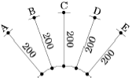
- A
- B
- C
- D
(정답률: 79%)
17. 문화재에 대한 조경 대상으로서 비교적 거리가 먼 것은?
- 무형문화재
- 사적
- 명승
- 천연기념물
(정답률: 83%)
18. 환경색채에 대한 설명으로 틀린 것은?
- 환경색채 디자인은 자연적인 특징과 인공적인 특징을 조화롭게 계획하여 지역 거주자들에게 좋은 영향을 줄 수 있도록 해야 한다.
- 인간에게 관계되는 환경색채로서 경관색체의 의미고 인간에게 심리적, 물리적인 영향을 준다.
- 자연과 친화된 환경일수록 풍토성이 강해지고, 지역이 고립되고 차단될수록 지역색의 특성이 강해진다.
- 자연기후의 영향을 받지 않아 계절색의 이미지를 고려하지 않아도 되며 주변 동ㆍ식물계의 생태학적 색채 또한 요소적 특징에 포함되지 않는다.
(정답률: 83%)
19. 체육공원의 계획 및 설계 시 고려해야 할 사항으로 옳지 않은 것은?
- 휴게센터는 출입구에서 먼 곳에 배치시킨다.
- 공원면적의 5~10%는 다목적 광장, 시설 전면적의 50~60%는 각종 경기장으로 배치한다.
- 야구장, 궁도장 및 사격장 등의 위험시설은 정적 휴게공간 등의 다른 공간과 격리하거나 지형, 식재 또는 인공 구조물로 차단한다.
- 운동시설은 공원 전 면적의 50% 이내의 면적을 차지하도록 하며, 주축을 남-북 방향으로 배치한다.
(정답률: 76%)
20. 수목의 종류, 배치 및 기타 횡단 구성요소와 균형 및 장래에 추가 차선을 목적으로 할 경우나 경관지 식수대의 경우는 그 폭을 몇 미터까지 할 수 있는가?
- 1.5m
- 2.0m
- 3.0m
- 4.5m
(정답률: 64%)
2과목: 조경식재
21. 다음 그림 중 식재를 통한 비대칭적 균형에 의한 공간감을 조성한 것이 아닌 것은?
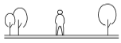
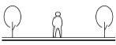
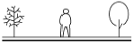
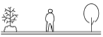
(정답률: 86%)
22. 다음 중 피자식물에 속하는 종이 아닌 것은?
- 은행나무
- 뽕나무
- 신갈나무
- 단풍나무
(정답률: 62%)
23. 일반적인 식재설계과정이 올바르게 연결된 것은?
- 예비계획단계→기본구상→식재설계→시공
- 식재기본구상→관련법규 검토→식재설계→시공
- 식재 기본구상→식재평면도 작성→유지관리→관련 법규검토
- 예비계획단계→시공상세도 작성→사용수종 선정→관련법규 검토
(정답률: 64%)
24. 토양의 화학적 성질 중 양이온치환에 관한 설명으로 틀린 것은?
- 양이온치환능력은 토양 표면으로부터 깊이가 깊어질수록 증가한다.
- 강우가 거의 없는 지역의 따뜻하고 건조한 토양은 칼슘, 나트륨, 칼륨의 흡착이 많다.
- 석회석 모재로부터 생성된 습윤한 온대지역의 토양은 칼슘과 마그네슘의 함량이 높다.
- 양이온치환능력은 완충능력을 결정하기 때문에 안정된 토양산도를 유지하는 데 중요한 역할을 한다.
(정답률: 60%)
25. 수목식재에 있어서 색채(color)는 중요한 디자인 요소이다. 이러한 디자인요소를 부각시키기 위해서 사용되는 각 수종의 기관별 특징이 되는 색채가 바르게 설명된 것은?
- 자작나무 - 꽃 - 흰색
- 흰말채나무 - 수피 - 흰색
- 홍가시나무 - 꽃 - 홍색
- 벽오동 - 수피 - 녹색
(정답률: 78%)
26. 무궁화의 설명으로 틀린 것은?
- 아욱과(科)에 속하는 식물이다.
- 꽃이 개량되어 담홍, 자색, 백색, 홑꽃, 겹꽃이 다양하다.
- 열매는 삭과로서 장타원형이고 약간의 털이 있는데 10월경에 성숙한다.
- 잎은 대생으로 3개로 갈라지나 윗부분의 잎은 갈라지지 않는 것도 있다.
(정답률: 65%)
27. 다음 수종 중 잎의 특징이 복엽인 것은?
- Albizia julibrissin
- Sorbus alnifolia
- Cercis chinensis
- Crataegus pinnatifida
(정답률: 49%)
28. 고속도로 중앙분리대 녹지에서 생육이 불량한 수종은?
- 금목서
- 아왜나무
- 광나무
- 꽝꽝나무
(정답률: 72%)
29. 다음 중 멸종가능성이 상대적으로 낮은 종은?
- 몸체가 작은 종
- 유전적 변이가 낮은 종
- 지리적 분포 범위가 좁은 종
- 개체군의 크기가 감소하고 있는 종
(정답률: 76%)
30. 식물체 기공에 관한 설명으로 틀린 것은?
- 10개의 공변세포로 이루어졌다.
- 증산과 이산화탄소가 유입되는 통로의 역할을 한다.
- 부유식물은 잎의 표면에, 건생식물은 함몰된 기공을 가진다.
- 주로 잎에 많이 존재하지만 광합성을 수행하는 녹색 줄기에도 약간 존재한다.
(정답률: 65%)
31. 다음 중 장미과(Rosaceae)에 속하지 않는 것은?
- 오미자
- 명자나무
- 죽단화
- 옥매
(정답률: 62%)
32. 보통명(common name)은 습성, 특징, 산지, 용도, 전설, 외래어 등에서 유래되어 비롯된다. 다음 중 이름이 나무의 특징을 반영한 것이 아닌 것은?
- 생강나무
- 주목
- 물푸레나무
- 너도밤나무
(정답률: 75%)
33. 다음 지피식물 중 백색계의 꽃을 볼 수 있는 식물로 모두 해당되는 것은?
- 할미꽃, 동자꽃, 금남화
- 복수초, 피나물, 원추리
- 바람꽃, 물매화, 남산제비꽃
- 용담, 투구꽃, 용머리
(정답률: 64%)
34. 서어나무에 대한 설명으로 틀린 것은?
- 꽃은 잎보다 먼저 핀다.
- 자작나무과(科) 식물로 잎은 호생이다.
- 우리나라 온대림의 극상림 우점종이다.
- 수피는 부분적으로 떨어지고 가로형의 피목이 발달한다.
(정답률: 50%)
35. 조경공사 시 표토 모으기 및 활용에 관한 설명으로 틀린 것은?
- 지하수위가 높은 평탄지에서는 가능한 한 채취를 피한다.
- 채집대상 표토의 토양산도(pH)가 5.6~7.4가 되도록 하여 사용한다.
- 보관 시 가적치의 최적두께는 2.0m를 기준으로 하며 최대 5.0m를 초과하지 않는다.
- 식재공사 시 표토 소요량과 활용 가능한 표토량을 비교하여 적절한 채취계획을 수립한다.
(정답률: 62%)
36. 줄기 싸주기(나무감기)를 하는 이유로 가장 거리가 먼 것은?
- 병해충 방제
- 잡목 침해 방지
- 수피 일소현상 보호
- 수목의 수분증산 억제
(정답률: 72%)
37. 흰색의 꽃(5~7월)과 붉은 색의 열매(9~10월)를 감상할 수 있으며, 녹음수 또는 독립수로 적합한 수종은?
- 박태기나무
- 이팝나무
- 마가목
- 광나무
(정답률: 63%)
38. 수목의 번식과 관련된 잡종강세(雜種强勢)의 설명으로 가장 적합한 것은?
- 잡종이 양친수보다 우수할 때
- 잡종보다 양친수가 우수할 때
- 양친수의 어느 한 쪽이 잡종보다 우수할 때
- 도입수종이 자생지보다 우수한 생장을 보일 때
(정답률: 73%)
39. 수목의 번식과 관련된 잡종강세(雜種强勢)의 설명으로 가장 적합한 것은?
- 잡종이 양친수보다 우수할 때
- 잡종보다 양친수가 우수할 때
- 양친수의 어느 한 쪽이 잡종보다 우수할 때
- 도입수종이 자생지보다 우수한 생장을 보일 때
(정답률: 52%)
40. 토양 산성화의 영향으로 틀린 것은?
- 토양의 떼알구조 형성이 활성화된다.
- 식물체에 인(P) 결핍현상이 일어난다.
- 토질이 노후화되어 뿌리균과 질소고정균과 같은 유용한 미생물의 활동이 저하된다.
- 식물체 내의 단백질을 응고시키거나 용해시켜 직접적 피해를 준다.
(정답률: 70%)
3과목: 조경시공
41. 순공사원가(순공사비) 항목에 해당되지 않는 것은?
- 경비
- 재료비
- 노무비
- 일반관리비
(정답률: 83%)
42. 다음 네트워크 공정표에서 작업 ②→④의 총 여유시간(T.F)은? (단, 단위는 일이다.)
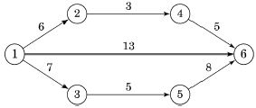
- 0일
- 3일
- 5일
- 6일
(정답률: 62%)
43. 열가소성 수지에 해당되지 않는 것은?
- 아크릴 수지
- 염화비닐 수지
- 폴리에틸렌 수지
- 우레탄 수지
(정답률: 54%)
44. 건축부문에서 일위대가표를 작성할 때 일위대가표의 계금 단위표준은 어떻게 적용시키는가?
- 0.1원까지는 쓰고, 그 이하는 버린다.
- 1원까지는 쓰고, 그 미만은 버린다.
- 1원까지는 쓰고, 소수위 1위에서 사사오입한다.
- 0.1원까지 쓰고, 소수위 2위에서 사사오입한다.
(정답률: 66%)
45. 공원부지 분할에 있어서 그림과 같은 삼각형 ABC의 변 BC상의 점 D와 AC상의 점 E를 연결하여 직선 DE로 삼각형 ABC의 면적을 2등분하려고 할 때 적당한 CE의 길이는?
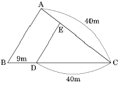
- 14.99m
- 18.49m
- 24.50m
- 32.50m
(정답률: 46%)
46. 그림과 같은 외팔보의 지점 A에서 발생하는 굽힘 모멘트의 크기는 몇 [kNㆍm]인가?
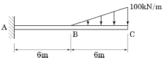
- 1800
- 2400
- 3000
- 3600
(정답률: 43%)
47. 목재의 수축과 팽윤에 직접 관여하지 않는 수분은?
- 결합수
- 자유수
- 흡착수
- 일시적 모관수
(정답률: 70%)
48. 조경공사에서 사용되는 목재의 장점에 해당하지 않는 것은?
- 비중에 비하여 강도ㆍ탄성ㆍ인성이 작고, 열ㆍ소리ㆍ전기 등의 전도성이 크다.
- 온도에 대한 팽창ㆍ수축이 비교적 작으며, 충격ㆍ진동의 흡수성이 크다.
- 외관이 아름답고 가격이 저렴하며, 생산량이 많아 구입이 용이하다.
- 적당한 경도와 연도로 가공이 쉽고 못질ㆍ접착이음 등의 접착성이 좋다.
(정답률: 67%)
49. 철근과 콘크리트의 부착력 성질로 옳지 않은 것은?
- 콘크리트 압축강도가 클수록 철근의 부착력은 커진다.
- 콘크리트 철근과 부착력으로 철근의 좌굴을 방지한다.
- 콘크리트의 부착력은 철근의 주장과 길이에 반비례하여 커진다.
- 철근의 단면 모양과 표면의 녹 상태에 따라 부착력이 달라진다.
(정답률: 71%)
50. 조적(벽돌)쌓기 시 일반적인 줄눈나비는 얼마를 기준으로 하는가?
- 5mm
- 10mm
- 15mm
- 20mm
(정답률: 77%)
51. 다음 중 재료의 물리적 성질에 대한 설명이 옳지 않은 것은?
- 비중(比重)이란 동일한 체적을 10℃물을 중량으로 나눈 값이다.
- 함수율(含水率)이란 재료 속에 포함된 수분의 중량을 건조 시 중량으로 나눈 값이다.
- 연화점(軟化點)이란 재료에 열을 가했을 때 액체로 변하는 상태에 달하는 온도이다.
- 반사율(反射率)이란 재료에의 입사 광속에너지에 대한 반사백분율로서 %로 표시한다.
(정답률: 61%)
52. 경량골재 콘크리트의 시공에 대한 설명으로 틀린 것은?
- 운반은 하차가 쉽고 재료 분리가 적은 운반차를 사용하여야 한다.
- 타설 시 모르타르가 침하하고, 굵은 골재가 떠오르는 경향이 적게 일어나도록 하여야 한다.
- 보통 콘크리트에 비해 진동기를 찔러 넣는 간격을 크게 하거나 진동시간을 약간 짧게 해 느슨하게 다져야 한다.
- 표면을 마무리한 지 1시간 정도 경과한 후에는 다짐기 등으로 표면을 가볍게 두들겨서 균열을 없애야 한다.
(정답률: 68%)
53. 어떤 지역에 20분 동안 15mm의 강우가 있다면 평균 강우강도(mm/h)는?
- 15
- 20
- 30
- 45
(정답률: 67%)
54. 다음 설명에 해당하는 거푸집의 종류는?
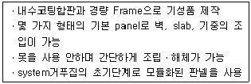
- 합판 거푸집
- 원형 거푸집
- 문양 거푸집
- 유로폼
(정답률: 65%)
55. 지형의 기복이 심한 소규모 공간에 물이 정체되는 곳이나 평탄면에 배수가 원활하지 못한 곳의 배수를 촉진시키기 위해 설치되는 심토층 배수방식은?
- 직각식(直角式)
- 차집식(遮集式)
- 선형식(扇形式)
- 자연식(自然式)
(정답률: 48%)
56. 네트워크 공정표를 작성하는 주요 목적이 아닌 것은?
- 전체작업의 진행을 관리하기 위한 것이다.
- 각 공종의 소요일수를 파악 후 간단히 수정하기 위한 것이다.
- 전체 작업의 시간적 계획을 수립하기 위한 것이다.
- 복잡한 공종 간의 연결 관계를 파악하기 위한 것이다.
(정답률: 66%)
57. 곡선부에서 발생하는 원심력을 방지하기 위한 편구배(i)를 구하는 공식은?
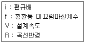
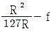
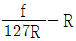
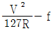
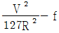
(정답률: 70%)
58. 항공사진의 판독 순서로 가장 적합한 것은?
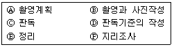
- Ⓐ → Ⓑ → Ⓒ → Ⓓ → Ⓔ → Ⓕ
- Ⓐ → Ⓑ → Ⓓ → Ⓒ → Ⓔ → Ⓕ
- Ⓐ → Ⓑ → Ⓒ → Ⓓ → Ⓕ → Ⓔ
- Ⓐ → Ⓑ → Ⓓ → Ⓒ → Ⓕ → Ⓔ
(정답률: 54%)
59. 다음 중 맨홀 배치가 필요 없는 경우는?
- 관거의 기점
- 단차가 발생하는 곳
- 관로의 경사가 완만할 때
- 관거의 유지관리가 필요한 곳
(정답률: 63%)
60. 큰 나무를 싣거나 옮기거나 또는 식재할 때 사용하기 가장 부적합한 것은?
- 레커(wrecker)차
- 체인블록(chain block)
- 크레인(crane)차
- 스캐리파이어(scalifier)
(정답률: 64%)
4과목: 조경관리
61. 조경의 유지관리 기본목적에 속하지 않는 것은?
- 신속성
- 기능성
- 안정성
- 관리성
(정답률: 73%)
62. 주로 상처가 나지 않도록 주의함으로써 병을 예방할 수 있는 것은?
- 근두암종병
- 녹병
- 흰가루병
- 털녹병
(정답률: 67%)
63. 다음 비탈면 보호공의 유지관리 항목의 연결 내용이 가장 부적합한 것은?
- 콘크리트 붙임공 - 균열
- 편책공 - 퇴적토사의 중량에 의한 손상
- 낙석방지망공 - 망이나 로프(rope)의 절단
- 돌붙임공, 블록붙임공 - 앵커(anchor)일부의 헐거움
(정답률: 55%)
64. 시설물 보수 사이클과 내용 연수의 연결이 잘못된것은?
- 시설물 : 파골라(목재), 내용 연수 : 10년, 보수 사이클 : 3~4년
- 시설물 : 벤치(목재), 내용 연수 : 7년, 보수 사이클 : 5~6년
- 시설물 : 그네(철재), 내용 연수 : 15년, 보수 사이클 : 2~3년
- 시설물 : 안내판(철재), 내용 연수 : 10년, 보수 사이클 : 3~4년
(정답률: 65%)
65. 수피(樹皮)에 구멍을 내어 비료성분을 주입하는 시비법에 해당하는 것은?
- 수간주사법
- 엽면시비법
- 방사상시비법
- 표토시비법
(정답률: 91%)
66. 운영관리계획은 양의 변화와 질의 변화로 분류한다. 다음 중 질(質)의 변화에 해당하는 것은?
- 양호한 식생의 확보
- 내구년한이 된 시설물
- 부족이 예측되는 시설의 증설
- 이용에 의한 손상이 생기는 시설의 보충
(정답률: 67%)
67. 잔디밭에서의 재배적인 잡초방제법에 대한 설명으로 부적당한 것은?
- 잔디를 자주 깎아 준다.
- 통기 작업으로 토양 조건을 개선한다.
- 토양에 수분이 과잉되지 않도록 한다.
- 잡초의 생육이 왕성할 시기에는 비료를 주지 않는다.
(정답률: 67%)
68. 가을에 수목들의 줄기 중간부분에 짚이나 거적을 감아두는 이유는 가장 적합한 것은?
- 운전자로 하여금 나무의 위치를 명확히 하여 가로수를 보호하기 위해
- 지주목을 묶어야 할 나무줄기의 부위를 감아 나무껍질을 보호하기 위해
- 겨울철에 동해를 예방하기 위해 추위에 취약한 부분을 감싸주는 효과를 위해
- 겨울을 나기 위해 내려오는 벌레들을 속에 숨어들게 하였다가 봄에 태워 죽이기 위해
(정답률: 77%)
69. 비탈면의 경사가 1:1.0 이상의 완구배로서 접착력이 없는 토양식생이 곤란한 풍화토, 점토 등의 경우에 비탈면의 풍화 및 침식 등의 방지를 주목적으로 사용되는 비탈면 보호공으로 가장 적당한 것은?
- 식생매트공
- 블록붙임공
- 낙석방지공
- 종자뿜어붙이기공
(정답률: 39%)
70. 1년간 연 근로시간이 240,000시간의 조경시설물 제조공장에서 4건의 휴업재해가 발생하여 100일의 휴업일수를 기록했다. 강도율은 얼마인가?(단, 연간 근로일수는 300일이다.)
- 0.34
- 34.0
- 0.75
- 0.075
(정답률: 48%)
71. 수목 관리 시 목재 부산물을 이용한 멀칭(mulching)의 기대 효과가 아닌 것은?
- 토양수분이 유지된다.
- 토양의 비옥도를 증진시킨다.
- 지온상승으로 잡초발생이 왕성해진다.
- 토양침식과 수분의 손실을 방지한다.
(정답률: 83%)
72. 활엽수의 질소(N)결핍 현상으로 옳은 것은?
- 잎의 끝이 마르거나 뒤틀린다.
- 잎은 짧고 소형이 되며 엽색은 황화한다.
- 엽맥 간의 황백화현상이 나타나고 심하면 피해부와 건전부위와의 경계가 뚜렷해진다.
- 어린나무의 경우 수관하부의 성숙엽에서 자줏빛으로 변색되기 시작하여 점차 안쪽과 위쪽의 잎으로 진행한다
(정답률: 66%)
73. 다음 수목관리 계획 중 정기적으로 수행하는 작업이 아닌 것은?
- 토양 개량
- 전정
- 병해충 방제
- 지주목 보수
(정답률: 60%)
74. 콘크리트재 유회시설의 콘크리트나 모르타르에 미관을 위한 재도장은 얼마의 기간을 두고 하는 것이 적당한가?
- 1년
- 3년
- 5년
- 8년
(정답률: 62%)
75. 다음 중 시설물의 안전관리에 관한 특별법상 안전점검의 종류가 아닌 것은?
- 정기점검
- 긴급점검
- 정밀점검
- 임시점검
(정답률: 60%)
76. 간척지의 다년생 우점잡초에 해당하는 것은?
- 새섬매자기
- 올챙이고랭이
- 물달개비
- 뚝새풀
(정답률: 57%)
77. 다음 중 토양 내에 과량 함유되어 있는 경우에는 중금속 오염의 피해를 주지만 미량 함유되어 있으면 필수 미량원소 비료가 되는 것은?
- Cd
- Zn
- Pb
- Cr
(정답률: 72%)
78. 작물보호제(농약)의 사용방법에 관한 주의사항으로 틀린 것은?
- 입제농약은 원칙적으로 물에 희석하여 사용방법 및 사용량에 따라 사용한다.
- 포장지의 표기사항이 이해가 되지 않거나 의문사항이 있을 경우에는 해당회사에 문의한다.
- 수화제 및 입상수화제 등 희석제농약은 사용약량을 지켜 물에 희석한 후 분무기를 이용하여 작물에 충분히 묻도록 뿌린다.
- '사용적기 및 방법'란에 경엽처리 등 살포방법이 특별히 명시되지 아니한 것은 반드시 농약 포장지를 확인 후 사용한다.
(정답률: 59%)
79. 레크레이션 분야에 수용능력(carrying capacity)이란 용어를 처음 사용한 사람은?
- Wagar
- Lapage
- Lucas
- Ashton
(정답률: 67%)
80. 다음 중 잔디의 피티움마름병에 방제 효과가 가장 나쁜 것은?
- 메탈락실-엠(수)
- 하이멕사졸(액)
- 만코제브ㆍ메탈락실(수)
- 다이아지논ㆍ에토펜프록스(수)
(정답률: 53%)